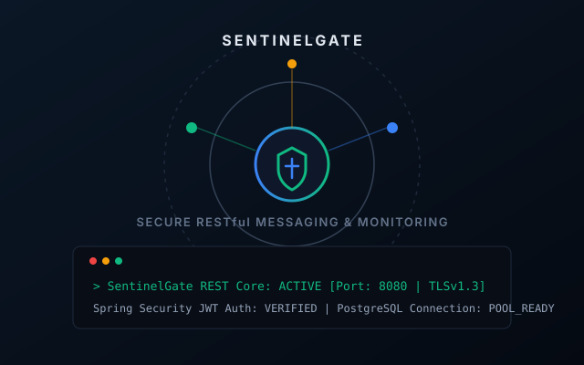

SentinelGate: Critical Infrastructure Monitoring & Secure RESTful API BackendSentinelGate: Kritik Altyapı İzleme ve Güvenli RESTful API Mesajlaşma Sistemi
Kritik altyapıların anlık takibi ve yüksek güvenlik gerektiren mesajlaşma süreçleri için geliştirilmiş kurumsal backend mimarisi. Spring Boot ve Java 17 kullanılarak tasarlandı; Spring Security ve JWT ile stateless güvenli kimlik doğrulama, PostgreSQL üzerinde optimize ilişkisel veri yönetimi sağlandı. Swagger ile interaktif API dokümantasyonu tamamlanıp Docker konteynerleri ile mikroservis ortamına uyarlandı.
Enterprise backend architecture engineered for critical infrastructure monitoring and high-assurance messaging. Built with Java 17 and Spring Boot, featuring stateless JWT authentication via Spring Security, optimized relational schema on PostgreSQL, interactive Swagger documentation, and full Docker containerization for seamless deployment.
- Java 17
- Spring Boot
- Spring Security
- JWT
- PostgreSQL
 Docker
Docker- Swagger / OpenAPI